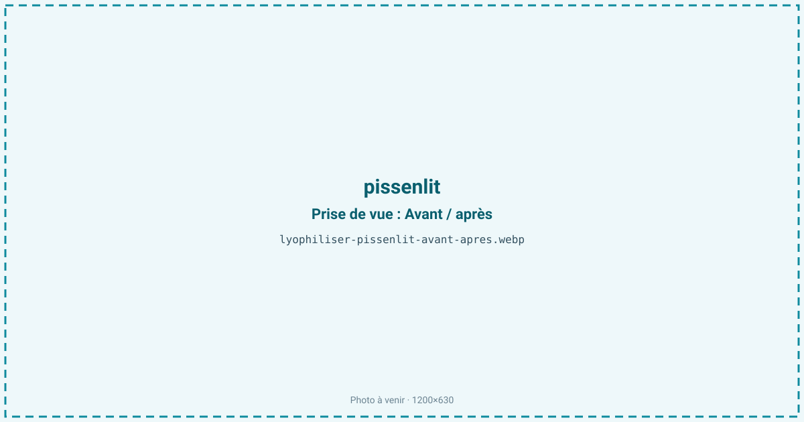
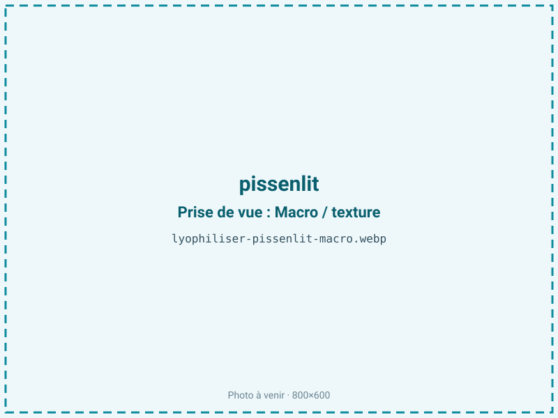
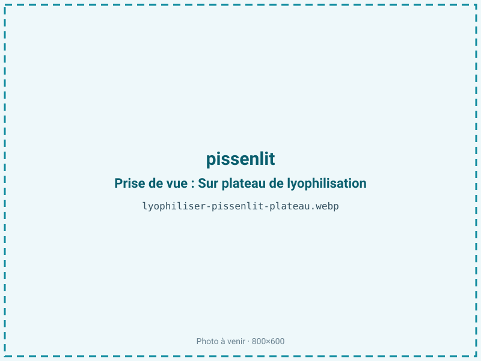
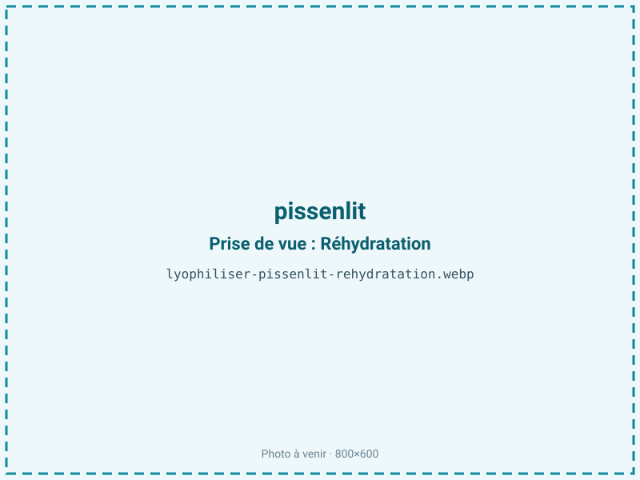

Lyophiliser du pissenlit
Le pissenlit sauvage se récolte sur une courte fenêtre et se dégrade vite une fois cueilli. Le séchage sous vide — micro-ondes pour la poudre de volume, lyophilisation pour un actif botanique premium — le stabilise en gardant l'amertume, l'inuline de la racine et le vert de la feuille. On alimente ainsi infusions, compléments et herboristerie toute l'année.

En bref
Comment pissenlit se comporte à la lyophilisation
Le pissenlit n'est pas une matière homogène : la feuille, la fleur et la racine ont des compositions et des comportements distincts. La feuille, à près de 89 % d'eau, est mince et riche en chlorophylle, en potassium et en lactones sesquiterpéniques amères ; elle sèche vite, en 16 à 24 h. La racine est plus dense et se charge d'inuline — jusqu'à 40 % de sa matière sèche en fin d'été et à l'automne —, un fructane très hygroscopique qui rend la poudre collante si l'aw remonte. Toute la plante contient un latex blanc (sève) qui peut poisser les surfaces.
À la congélation, la feuille cristallise vite quand la racine, plus épaisse, demande une découpe fine pour éviter un cœur humide. Les composés amers et les polyphénols (acide chlorogénique de la fleur) traversent bien le froid ; c'est la chaleur qui les dégraderait et ferait virer la couleur. Le front de sublimation avance donc à des vitesses très différentes selon l'organe traité, d'où l'intérêt de ne pas mélanger feuille et racine dans un même lot.
Paramètres de cycle
Nettoyer soigneusement la plante sauvage — terre, sable, résidus — car le pissenlit pousse au ras du sol. Traiter séparément feuille et racine : la feuille s'étale en couche fine et sèche vite, la racine se tranche en rondelles de quelques millimètres pour ne pas garder un cœur humide sous l'inuline. Congeler à −30 °C. En primaire, une clayette modérée suffit pour la feuille ; la racine, plus dense, demande un palier plus long. Produit maigre (moins de 2 % de lipides), le pissenlit tolère une aw basse de 0,20 à 0,30, favorable à sa conservation et sans risque de rancissement. Pour la racine surtout, viser le bas de la plage limite le caractère collant de l'inuline. Le critère d'arrêt vise une aw inférieure ou égale à 0,30 et une matière franchement cassante.
Pièges connus
- Bien nettoyer la plante sauvage.
- Fleur et racine se traitent séparément.



Variantes & provenance
L'organe change tout : la racine d'automne, gorgée d'inuline, se prête à la torréfaction en succédané de café, tandis que la jeune feuille de printemps, plus tendre et moins amère, vise l'infusion et la salade. La fleur, riche en acide chlorogénique, se traite entière et très fraîche. La saison pilote la teneur en inuline de la racine, minimale à la floraison et maximale en fin de saison. La provenance sauvage impose une vigilance particulière sur la propreté et l'absence de traitements phytosanitaires en bordure de culture. Selon la découpe — feuille entière, racine en rondelles ou en bâtonnets —, la durée de cycle et le rendement varient nettement.
Conservation & DLUO
Le facteur limitant est la reprise d'humidité, exacerbée par l'inuline très hygroscopique de la racine, et non l'oxydation des graisses : le pissenlit est un produit maigre pour lequel une aw basse est favorable. Sur la feuille, s'ajoute une dégradation lente de la chlorophylle et des polyphénols sous l'effet de la lumière. La poudre de racine, si elle reprend l'eau, s'agglomère et fige : le conditionnement barrière opaque avec, idéalement, un absorbeur d'humidité, est déterminant. Comptez 18 à 24 mois en barrière opaque, à température ambiante et à l'abri de la lumière. Un stockage au sec et au frais préserve à la fois la couleur de la feuille et la fluidité de la poudre de racine ; une fois le sachet ouvert, refermer vite car la reprise d'humidité est rapide.
18 à 24 mois en barrière opaque.
Estimez selon votre emballage :
Face aux autres procédés de séchage
Le séchage à l'air d'une feuille aussi fine est long et laisse le temps à la chlorophylle de virer et aux polyphénols de s'oxyder. Le séchage à chaud brunit la feuille et attaque les composés amers et l'acide chlorogénique recherchés. Pour une poudre botanique à longue conservation au meilleur coût, le micro-ondes sous vide suffit le plus souvent et constitue la voie la plus économique. La lyophilisation se justifie quand on veut un actif préservé au maximum, une feuille au vert intact ou une racine réhydratable de qualité premium : le froid conserve alors mieux l'inuline, l'amertume utile et la couleur que tout séchage thermique.
Marchés & applications
Infusions et tisanes dépuratives, poudre de racine torréfiée en alternative au café, compléments alimentaires (draineur, digestion), herboristerie et phytothérapie, colorant et amertume naturelle pour boissons. Les clients types sont les herboristeries, les fabricants de compléments et d'infusions, les marques de boissons fonctionnelles, les distillateurs de bitters et d'amers végétaux, et les cueilleurs ou producteurs de plantes sauvages qui veulent valoriser feuille, fleur et racine sur toute l'année.
- Infusions
- Poudre d'actifs
- Compléments
Questions fréquentes — pissenlit
Faut-il traiter feuille et racine ensemble ?
Non : elles n'ont ni la même épaisseur ni le même comportement au séchage. On les sépare pour éviter un cœur humide dans la racine.
Pourquoi la poudre de racine devient-elle collante ?
À cause de l'inuline, un sucre très hygroscopique qui atteint 40 % de la racine à l'automne. Une aw basse et un conditionnement étanche l'évitent.
Lyophilisation ou micro-ondes sous vide ?
Pour une poudre de volume à bas coût, le micro-ondes sous vide suffit. La lyophilisation se réserve aux actifs premium et aux racines réhydratables.
La plante sauvage est-elle sûre ?
À condition d'une récolte propre, loin des bords de route et des cultures traitées, et d'un lavage soigneux avant traitement.
Garde-t-elle son amertume ?
Oui, les lactones sesquiterpéniques amères résistent bien au froid ; c'est le séchage à chaud qui les altère.
Combien de pissenlit frais pour 100 g sec ?
Environ 1,2 kg, le ratio étant proche de 12:1 pour une plante à près de 89 % d'eau.
La racine peut-elle remplacer le café ?
Torréfiée après séchage, la racine riche en inuline donne une boisson chaude sans caféine au goût torréfié, courante en herboristerie.
Prochaine étape : envoyez-nous 200 g
Vous avez les repères du pissenlit. La suite logique : nous envoyer un échantillon et repartir avec une fiche technique sur votre produit — rendement, aw finale, coût au kilo.
Tester du pissenlit — 250 à 500 €Déductible de votre premier lot.